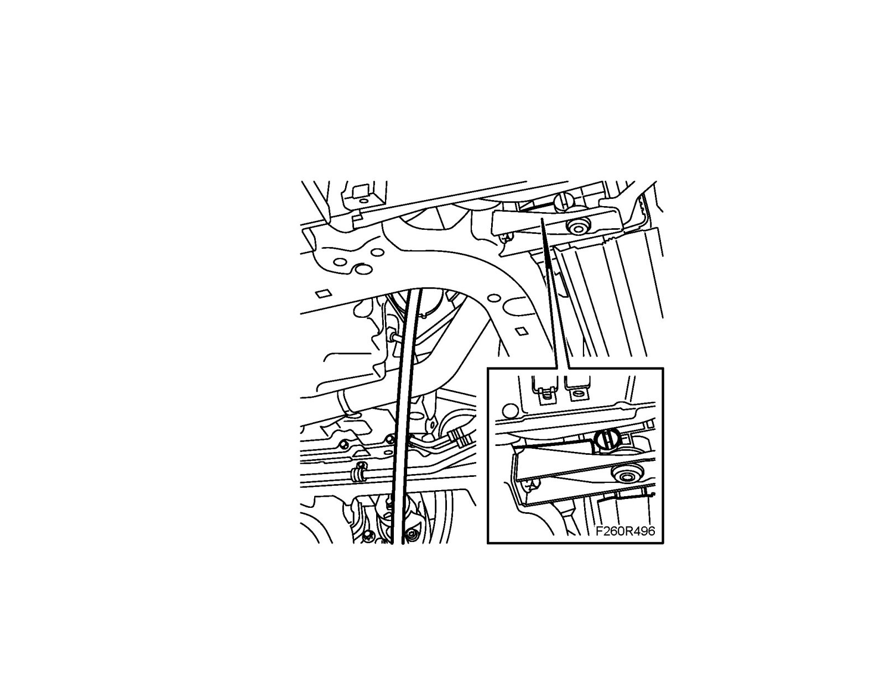
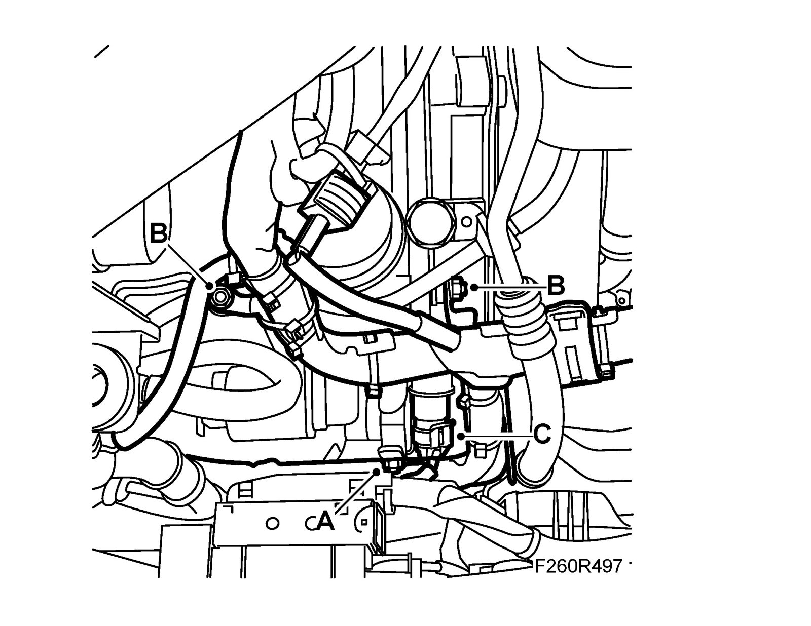
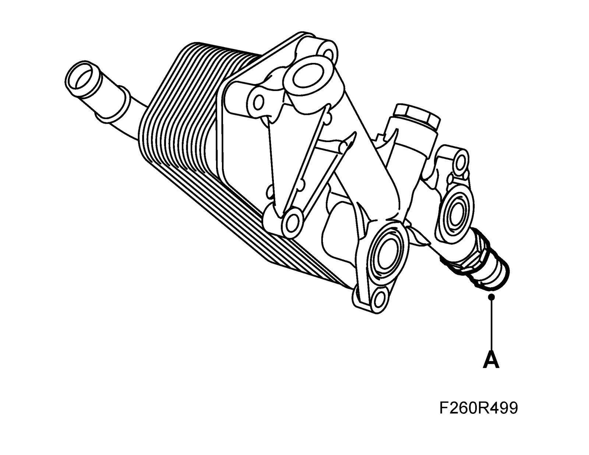
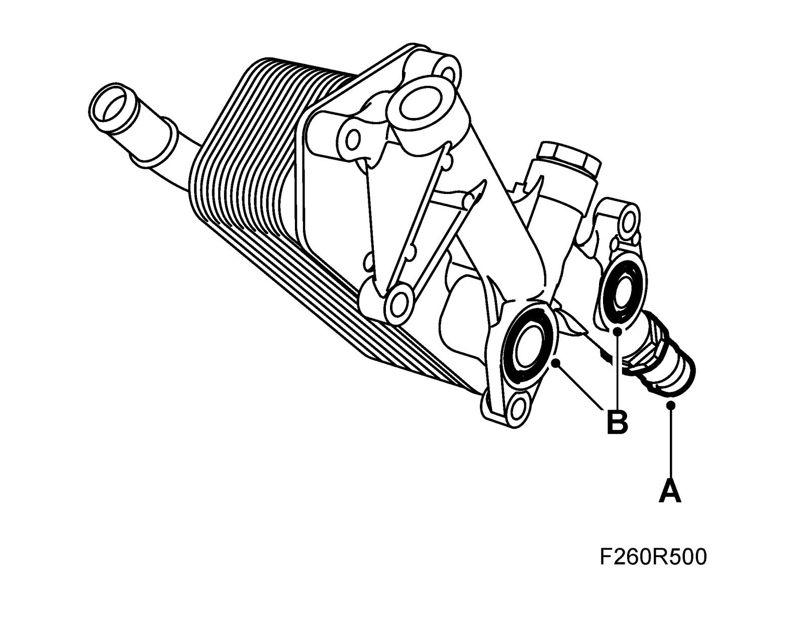
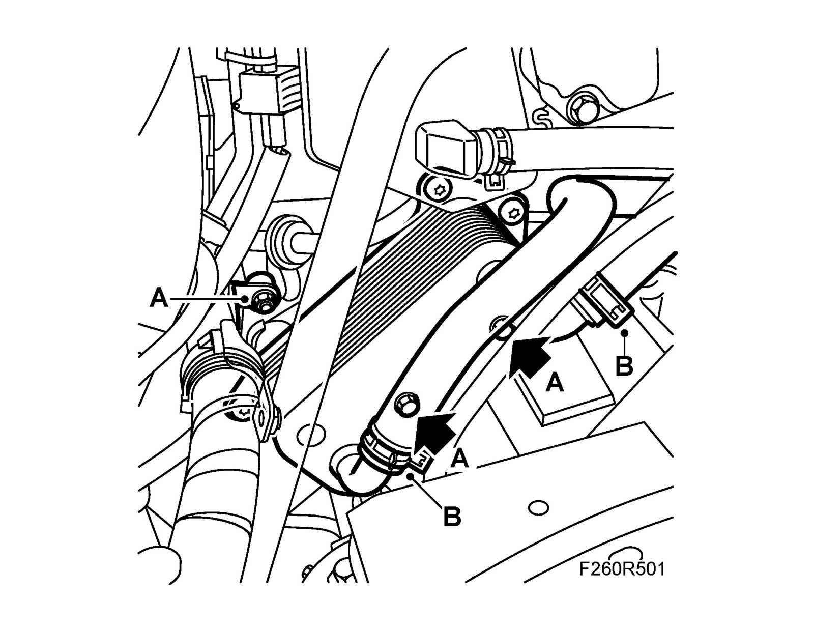
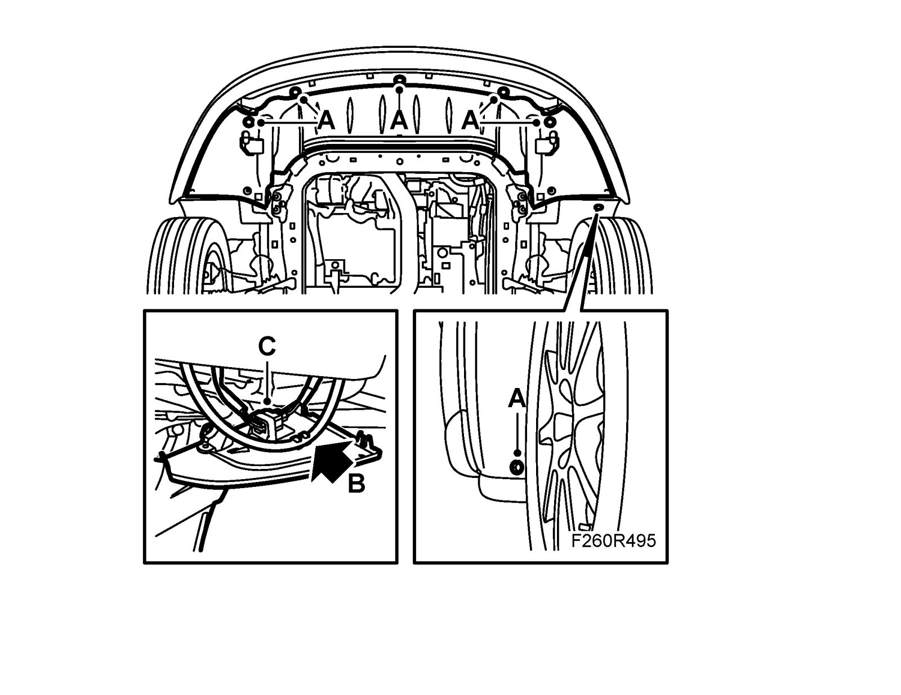

Removal and Replacement
Fluid-cooled oil coolerTo remove
1. Remove the Battery and Battery cover, bottom.
2. Remove the upper engine cover.
3. Remove the lower spoiler shield (A). Detach the hose to the headlight washer (B) and unplug and remove the connector (C).

4. Place a receptacle under the car, connect a hose to the radiator and drain the coolant

5. Remove the cable guide bolt (A) and nuts (B) (1 bolt and 2 nuts). Lift off the guide from the studs.

6. Unplug the oil pressure sensor connector (C).
7. Detach the coolant hoses on the oil cooler and move them aside.
8. Place a receptacle under the engine to collect the oil and coolant.
9. Remove the oil cooler's retaining bolts to the engine block.
Note
Note the location of the bolts
10. Lift out the radiator and remove the oil pressure sensor (A).

To fit
1. Fit the oil pressure sensor (A).

2. Fit new O-rings onto the oil cooler (B).
3. Position the oil cooler. Fit the oil cooler bolts (A).
Tightening torque 22 Nm (16 lbf ft)
Note
Note the location of the bolts.

4. Fit the oil cooler hoses and clamps (B).
5. Pressure test the cooling system, see Cooling system, pressure testing.
6. Fit the cable guide (A) and plug in the oil pressure sensor connector (C).

7. Replace the upper engine cover.
8. Fit the Battery cover, lower section and Battery.
9. Check the engine oil level and top up as necessary.
10. Fill coolant fluid and carry out Bleeding the cooling system when working with the oil cooler.
11. Connect the hose to the headlamp washer (B) and fit and plug in the connector (C). Fit the lower spoiler shield (A).

12. Carry out Procedures after reconnecting the battery.